En el celular, también
Misma cuenta en la compu y en el celu. Lo que cargás en un lado aparece en el otro.
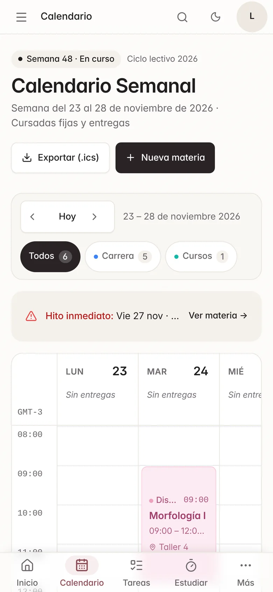
Donde crece lo que aprendés
Materias, apuntes, entregas y parciales, ordenados como los necesitás para estudiar. Cada vez que abrís Nido, ya sabés por dónde arrancar.
Gratis · Windows 10 y 11 · En Mac, iPhone y Android, desde el navegador
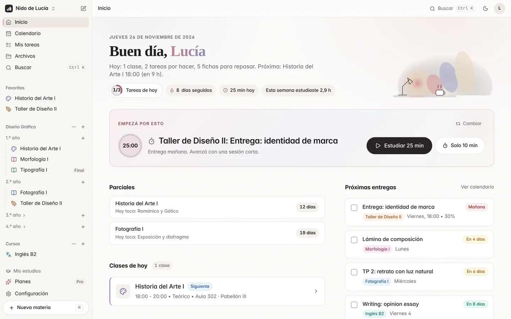
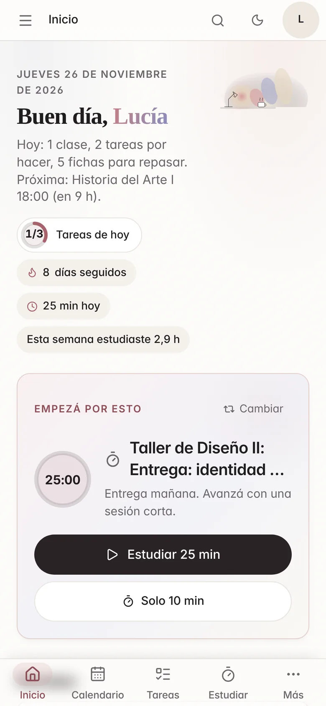
Recorrido
Así se ve Nido con una cursada real de ejemplo. Elegí una parte o dejá que avance sola.
Materias Cada materia con su portada, su horario, su plan hacia el parcial y todo su material.
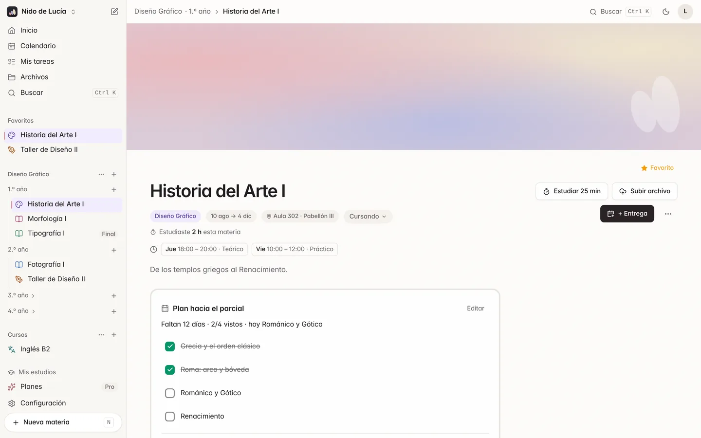
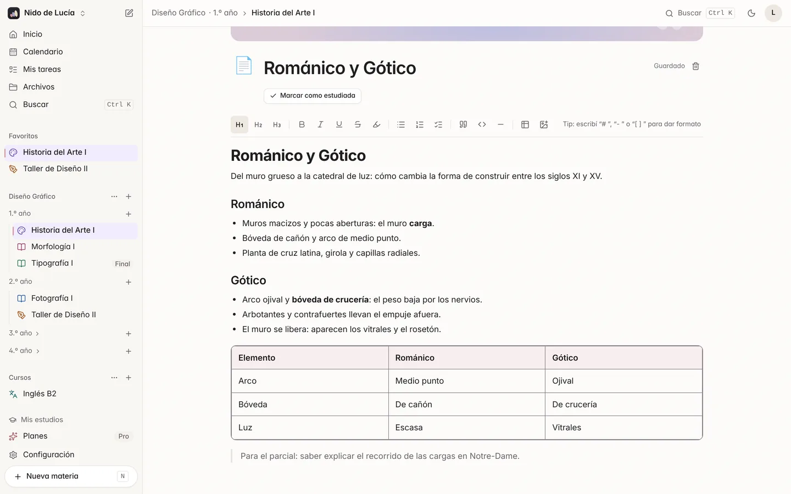
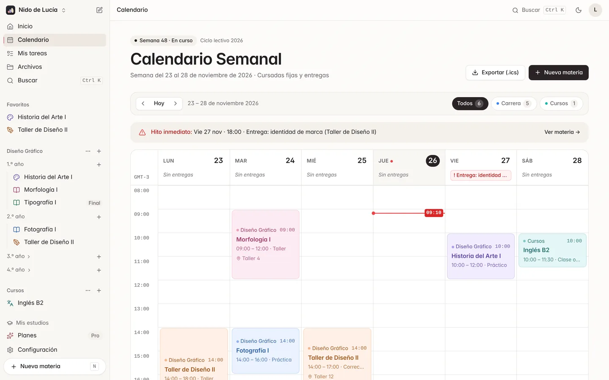
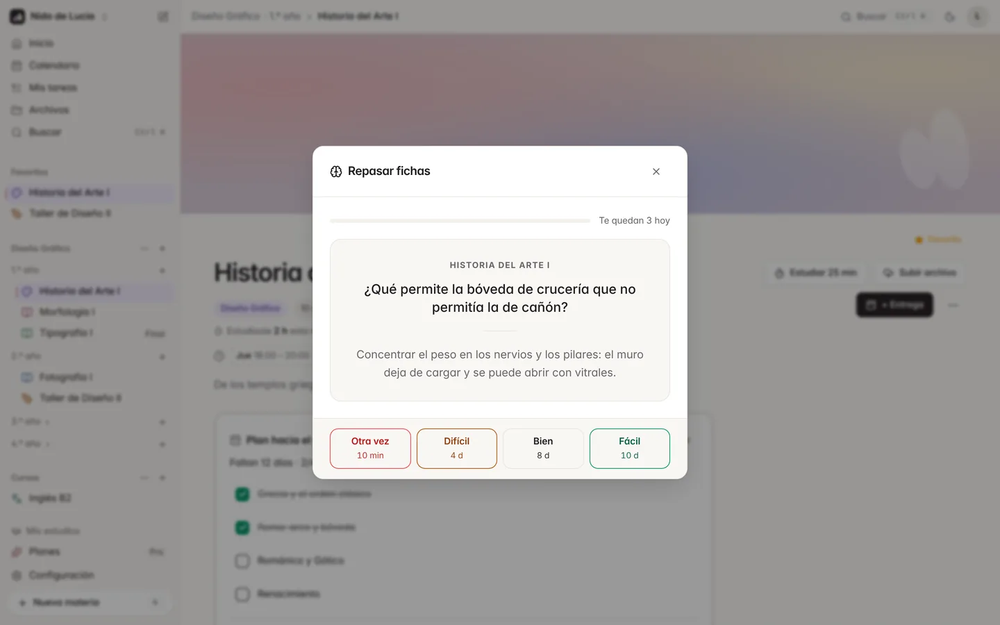
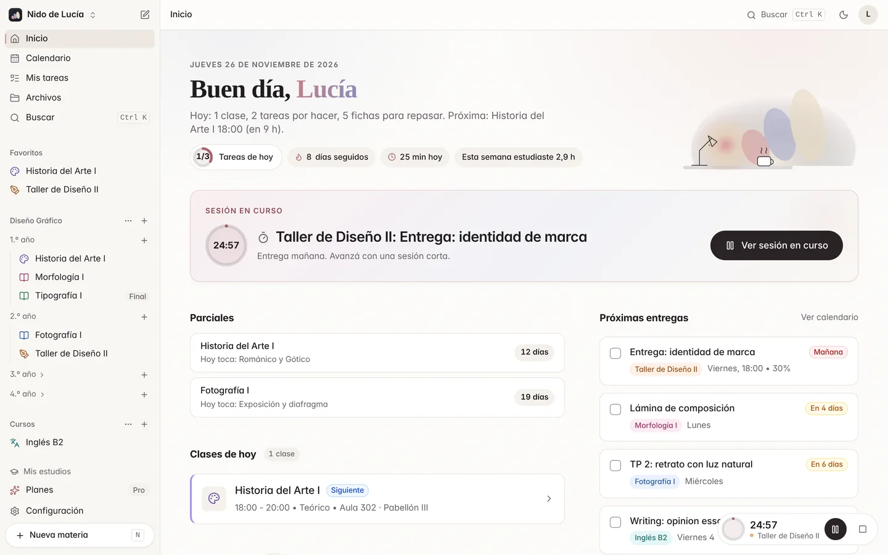
Organizá
Armá tu carrera por años y sumá cursos sueltos. Cada materia guarda sus unidades, sus archivos, sus entregas y los datos de los profes.
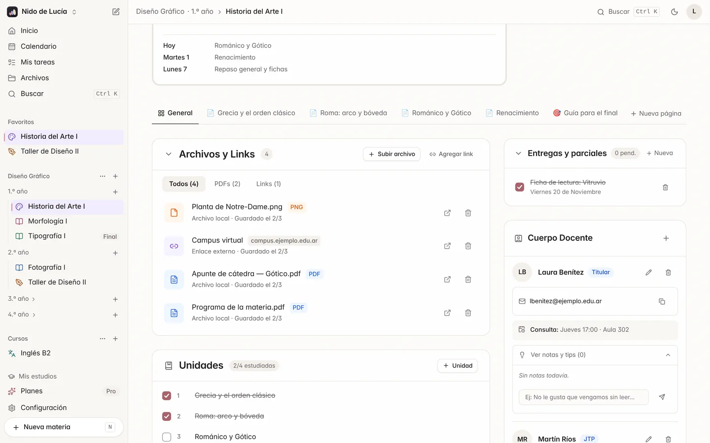
Planeá
Las clases fijas, las entregas y las tareas del día conviven en un mismo lugar. Cargás una fecha una vez y aparece donde la necesitás.
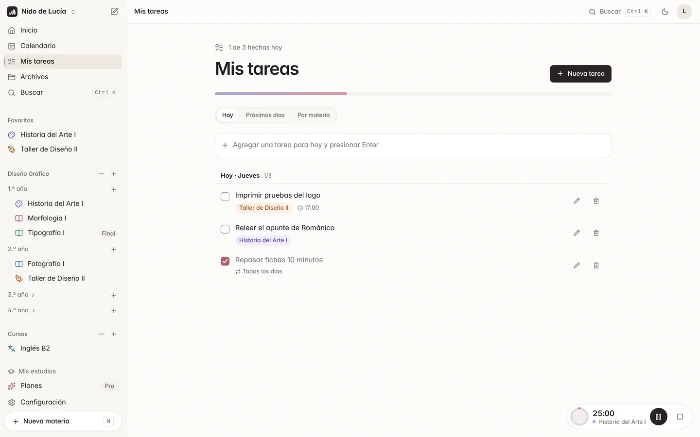
Encontrá
Apretá Ctrl K y saltá a cualquier materia, entrega o sección. Sin buscar carpetas, sin perder el hilo.
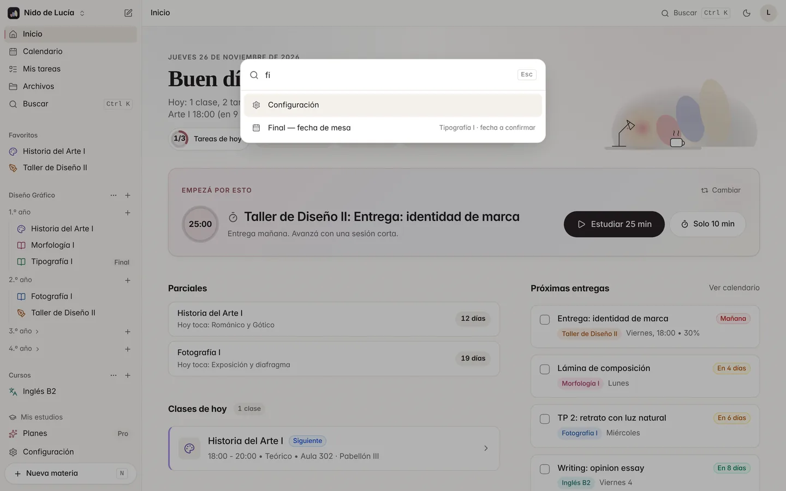
Y además
Misma cuenta en la compu y en el celu. Lo que cargás en un lado aparece en el otro.

Ves cuántos días seguidos estudiaste y cuántas horas sumás en la semana.
Sin internet ves lo último que cargaste. Tildar tareas y repasar fichas se guarda y se sube cuando vuelve la red.
Cada ficha vuelve cuando la estás por olvidar.
Tus apuntes en Markdown, tus datos en JSON y tus fichas en CSV.
De día y de noche
Nido sigue el tema de tu sistema o lo elegís vos. De noche, el Inicio te saluda con la luna.
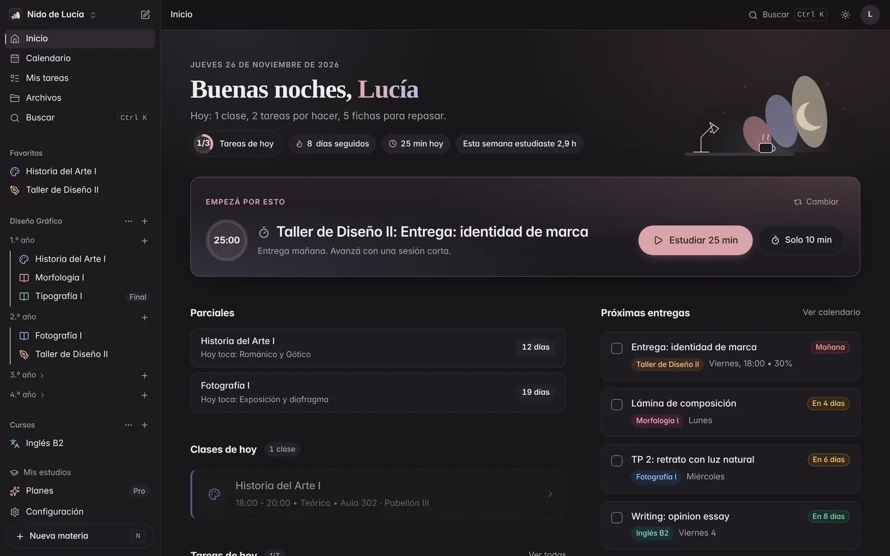
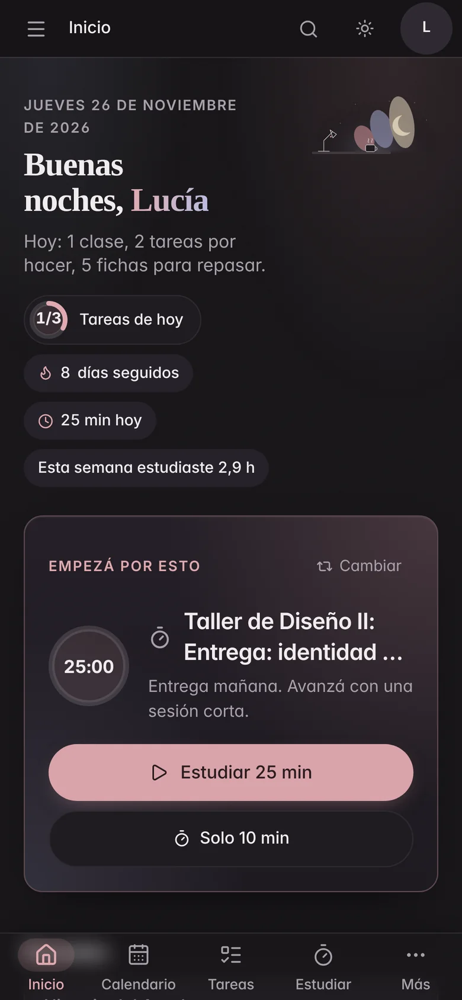
Descargar
La app de escritorio es para Windows. En Mac, iPhone, iPad y Android, Nido funciona completo desde el navegador.
Windows 10 y 11 · 64 bits · Gratis
Descargar para Windows Abrís el instalador, seguís los pasos y entrás con tu cuenta.Desde el navegador, con la misma cuenta.
Abrir Nido en la web En el celu, tocá «Compartir» → «Agregar a inicio» y queda como una app más.Planes
Hoy no se cobra nada: los planes pagos se abren muy pronto.
Para empezar a ordenarte
US$0
Descargar gratisPara estudiar sin techos
US$3/mes
Anotarme desde la appPara los que estudian en serio
US$9/mes
Anotarme desde la appPreguntas
Sí. El plan Gratis incluye 1 carrera, 1 lista de cursos, hasta 5 materias activas, 200 fichas y 100 MB para archivos. Las materias aprobadas o archivadas no cuentan para el límite.
Sí, desde el navegador y con la misma cuenta. La app que se descarga es para Windows; en el resto de los dispositivos Nido funciona completo en la web y lo podés agregar a la pantalla de inicio del celu.
Sí. Entrás con tu cuenta y ves lo mismo en todos lados: materias, apuntes, fichas, tu racha y tus horas de estudio.
Sin conexión ves lo último que se sincronizó. Tildar una tarea, repasar fichas y las sesiones de estudio se guardan y se suben solas cuando vuelve la red. Crear o editar el resto necesita conexión, y Nido te lo avisa.
Sí: universidad, terciario o cursos sueltos. Armás tus carreras por años y cada materia tiene sus unidades, archivos, entregas y parciales.
Cuando quieras: exportás tus apuntes en Markdown, todos tus datos en JSON y tus fichas en CSV desde Configuración.